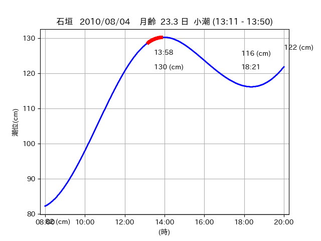
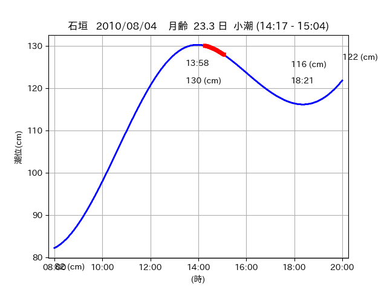

<!DOCTYPE html>
<html>
<head>
    
    <meta http-equiv="content-type" content="text/html; charset=UTF-8" />
    
        <script>
            L_NO_TOUCH = false;
            L_DISABLE_3D = false;
        </script>
    
    <style>html, body {width: 100%;height: 100%;margin: 0;padding: 0;}</style>
    <style>#map {position:absolute;top:0;bottom:0;right:0;left:0;}</style>
    <script src="https://cdn.jsdelivr.net/npm/leaflet@1.9.3/dist/leaflet.js"></script>
    <script src="https://code.jquery.com/jquery-3.7.1.min.js"></script>
    <script src="https://cdn.jsdelivr.net/npm/bootstrap@5.2.2/dist/js/bootstrap.bundle.min.js"></script>
    <script src="https://cdnjs.cloudflare.com/ajax/libs/Leaflet.awesome-markers/2.0.2/leaflet.awesome-markers.js"></script>
    <link rel="stylesheet" href="https://cdn.jsdelivr.net/npm/leaflet@1.9.3/dist/leaflet.css"/>
    <link rel="stylesheet" href="https://cdn.jsdelivr.net/npm/bootstrap@5.2.2/dist/css/bootstrap.min.css"/>
    <link rel="stylesheet" href="https://netdna.bootstrapcdn.com/bootstrap/3.0.0/css/bootstrap-glyphicons.css"/>
    <link rel="stylesheet" href="https://cdn.jsdelivr.net/npm/@fortawesome/fontawesome-free@6.2.0/css/all.min.css"/>
    <link rel="stylesheet" href="https://cdnjs.cloudflare.com/ajax/libs/Leaflet.awesome-markers/2.0.2/leaflet.awesome-markers.css"/>
    <link rel="stylesheet" href="https://cdn.jsdelivr.net/gh/python-visualization/folium/folium/templates/leaflet.awesome.rotate.min.css"/>
    
            <meta name="viewport" content="width=device-width,
                initial-scale=1.0, maximum-scale=1.0, user-scalable=no" />
            <style>
                #map_e0eef3c5e27784bd69ee8dd5c38be85e {
                    position: relative;
                    width: 2048.0px;
                    height: 1600.0px;
                    left: 0.0%;
                    top: 0.0%;
                }
                .leaflet-container { font-size: 1rem; }
            </style>
        
</head>
<body>
    
    
            <div class="folium-map" id="map_e0eef3c5e27784bd69ee8dd5c38be85e" ></div>
        
</body>
<script>
    
    
            var map_e0eef3c5e27784bd69ee8dd5c38be85e = L.map(
                "map_e0eef3c5e27784bd69ee8dd5c38be85e",
                {
                    center: [24.047, 123.747],
                    crs: L.CRS.EPSG3857,
                    ...{
  "zoom": 12,
  "zoomControl": true,
  "preferCanvas": false,
}

                }
            );

            

        
    
            var tile_layer_b03938cce2e9d5f39b89299173a900b5 = L.tileLayer(
                "https://cyberjapandata.gsi.go.jp/xyz/seamlessphoto/{z}/{x}/{y}.jpg",
                {
  "minZoom": 0,
  "maxZoom": 18,
  "maxNativeZoom": 18,
  "noWrap": false,
  "attribution": "\u5730\u7406\u9662\u5730\u56f3",
  "subdomains": "abc",
  "detectRetina": false,
  "tms": false,
  "opacity": 1,
}

            );
        
    
            tile_layer_b03938cce2e9d5f39b89299173a900b5.addTo(map_e0eef3c5e27784bd69ee8dd5c38be85e);
        
    
            var marker_a579875a4916db6b0cb972b92a3537ff = L.marker(
                [24.05, 123.8071],
                {
}
            ).addTo(map_e0eef3c5e27784bd69ee8dd5c38be85e);
        
    
            var icon_5a9093cb29c82a741b444f5244ca0303 = L.AwesomeMarkers.icon(
                {
  "markerColor": "orange",
  "iconColor": "white",
  "icon": "info-sign",
  "prefix": "glyphicon",
  "extraClasses": "fa-rotate-0",
}
            );
        
    
        var popup_06c678cae373f854e32864de25f034c5 = L.popup({
  "maxWidth": "100%",
});

        
            
                var html_bd3a9bd3e79912c3c180246f15161827 = $(`<div id="html_bd3a9bd3e79912c3c180246f15161827" style="width: 100.0%; height: 100.0%;"><table><tr><td></td></tr><tr><td><center>20100804 No.1 </center></table></td></tr></table</div>`)[0];
                popup_06c678cae373f854e32864de25f034c5.setContent(html_bd3a9bd3e79912c3c180246f15161827);
            
        

        marker_a579875a4916db6b0cb972b92a3537ff.bindPopup(popup_06c678cae373f854e32864de25f034c5)
        ;

        
    
    
                marker_a579875a4916db6b0cb972b92a3537ff.setIcon(icon_5a9093cb29c82a741b444f5244ca0303);
            
    
            var poly_line_12adfa0c0b8f2a2347f8cd30d5073aff = L.polyline(
                [[24.05, 123.8071], [24.0478, 123.803]],
                {"bubblingMouseEvents": true, "color": "#00FFFF", "dashArray": null, "dashOffset": null, "fill": false, "fillColor": "#00FFFF", "fillOpacity": 0.2, "fillRule": "evenodd", "lineCap": "round", "lineJoin": "round", "noClip": false, "opacity": 1.0, "smoothFactor": 1.0, "stroke": true, "weight": 3}
            ).addTo(map_e0eef3c5e27784bd69ee8dd5c38be85e);
        
    
            var marker_bcfbe5ed12f515f63cad67a2c9510217 = L.marker(
                [24.042, 123.7881],
                {
}
            ).addTo(map_e0eef3c5e27784bd69ee8dd5c38be85e);
        
    
            var icon_603b5c83b9f679f8827bd24b60d84016 = L.AwesomeMarkers.icon(
                {
  "markerColor": "orange",
  "iconColor": "white",
  "icon": "info-sign",
  "prefix": "glyphicon",
  "extraClasses": "fa-rotate-0",
}
            );
        
    
        var popup_a3f21da8070aa66135ff4912bec6a692 = L.popup({
  "maxWidth": "100%",
});

        
            
                var html_6cece7e48fee8b9e45222723a754892d = $(`<div id="html_6cece7e48fee8b9e45222723a754892d" style="width: 100.0%; height: 100.0%;"><table><tr><td></td></tr><tr><td><center>20100804 No.2 </center></table></td></tr></table</div>`)[0];
                popup_a3f21da8070aa66135ff4912bec6a692.setContent(html_6cece7e48fee8b9e45222723a754892d);
            
        

        marker_bcfbe5ed12f515f63cad67a2c9510217.bindPopup(popup_a3f21da8070aa66135ff4912bec6a692)
        ;

        
    
    
                marker_bcfbe5ed12f515f63cad67a2c9510217.setIcon(icon_603b5c83b9f679f8827bd24b60d84016);
            
    
            var poly_line_56f4084aca06eb709306dae1731e174e = L.polyline(
                [[24.042, 123.7881], [24.0413, 123.781]],
                {"bubblingMouseEvents": true, "color": "#00FFFF", "dashArray": null, "dashOffset": null, "fill": false, "fillColor": "#00FFFF", "fillOpacity": 0.2, "fillRule": "evenodd", "lineCap": "round", "lineJoin": "round", "noClip": false, "opacity": 1.0, "smoothFactor": 1.0, "stroke": true, "weight": 3}
            ).addTo(map_e0eef3c5e27784bd69ee8dd5c38be85e);
        
    
            var marker_1d532f36f978b83d4f53a3864f583053 = L.marker(
                [24.0449, 123.76],
                {
}
            ).addTo(map_e0eef3c5e27784bd69ee8dd5c38be85e);
        
    
            var icon_b9a5904bea8bda3b890a785a48b6aca0 = L.AwesomeMarkers.icon(
                {
  "markerColor": "orange",
  "iconColor": "white",
  "icon": "info-sign",
  "prefix": "glyphicon",
  "extraClasses": "fa-rotate-0",
}
            );
        
    
        var popup_deac49dd8ca4656ea8a789de8b40fb5a = L.popup({
  "maxWidth": "100%",
});

        
            
                var html_63012cbb4ad7d11401473559533bcd64 = $(`<div id="html_63012cbb4ad7d11401473559533bcd64" style="width: 100.0%; height: 100.0%;"><table><tr><td></td></tr><tr><td><center>20100804 No.3 </center></table></td></tr></table</div>`)[0];
                popup_deac49dd8ca4656ea8a789de8b40fb5a.setContent(html_63012cbb4ad7d11401473559533bcd64);
            
        

        marker_1d532f36f978b83d4f53a3864f583053.bindPopup(popup_deac49dd8ca4656ea8a789de8b40fb5a)
        ;

        
    
    
                marker_1d532f36f978b83d4f53a3864f583053.setIcon(icon_b9a5904bea8bda3b890a785a48b6aca0);
            
    
            var poly_line_21e2d2a2b7271b1e7e464498805cb8a3 = L.polyline(
                [[24.0449, 123.76], [24.0451, 123.7529]],
                {"bubblingMouseEvents": true, "color": "#FF00FF", "dashArray": null, "dashOffset": null, "fill": false, "fillColor": "#FF00FF", "fillOpacity": 0.2, "fillRule": "evenodd", "lineCap": "round", "lineJoin": "round", "noClip": false, "opacity": 1.0, "smoothFactor": 1.0, "stroke": true, "weight": 3}
            ).addTo(map_e0eef3c5e27784bd69ee8dd5c38be85e);
        
    
            var marker_f61c0036c66b1feb84cc26883ba9404b = L.marker(
                [24.0466, 123.7519],
                {
}
            ).addTo(map_e0eef3c5e27784bd69ee8dd5c38be85e);
        
    
            var icon_8de0191bf16296364e43249fee760582 = L.AwesomeMarkers.icon(
                {
  "markerColor": "orange",
  "iconColor": "white",
  "icon": "info-sign",
  "prefix": "glyphicon",
  "extraClasses": "fa-rotate-0",
}
            );
        
    
        var popup_d4378c00026b516bbbbf3e8feb2f4966 = L.popup({
  "maxWidth": "100%",
});

        
            
                var html_61a2eb960e18dfbe15e194540a4c4ae5 = $(`<div id="html_61a2eb960e18dfbe15e194540a4c4ae5" style="width: 100.0%; height: 100.0%;"><table><tr><td></td></tr><tr><td><center>20100804 No.4 </center></table></td></tr></table</div>`)[0];
                popup_d4378c00026b516bbbbf3e8feb2f4966.setContent(html_61a2eb960e18dfbe15e194540a4c4ae5);
            
        

        marker_f61c0036c66b1feb84cc26883ba9404b.bindPopup(popup_d4378c00026b516bbbbf3e8feb2f4966)
        ;

        
    
    
                marker_f61c0036c66b1feb84cc26883ba9404b.setIcon(icon_8de0191bf16296364e43249fee760582);
            
    
            var poly_line_3151afc8bdc563fe236ad82cc80e5928 = L.polyline(
                [[24.0466, 123.7519], [24.0475, 123.7416]],
                {"bubblingMouseEvents": true, "color": "#FF00FF", "dashArray": null, "dashOffset": null, "fill": false, "fillColor": "#FF00FF", "fillOpacity": 0.2, "fillRule": "evenodd", "lineCap": "round", "lineJoin": "round", "noClip": false, "opacity": 1.0, "smoothFactor": 1.0, "stroke": true, "weight": 3}
            ).addTo(map_e0eef3c5e27784bd69ee8dd5c38be85e);
        
</script>
</html>